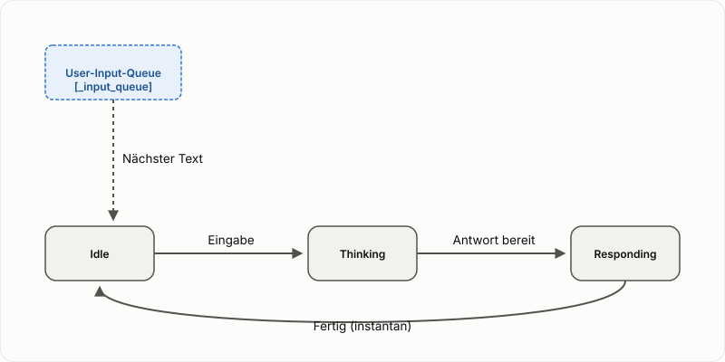

Spezifikation: Kern-Text-Dialogschleife¶
Status: Entwurf (2026-10-02) -- basiert auf dem Modellschnitt aus docs/specs/core-dialog-loop.md, fokussiert aber rein auf die Text-Logik und Queue-Verarbeitung.
Diese Spezifikation beschreibt das fundamentale Modell der Dialogführung in speech-to-speech, reduziert auf den Text-Kanal. Dies bildet das Fundament, auf dem die Sprach-Erweiterung (STT/TTS) aufbaut.
1. Zustandsmodell (Text-only)¶

Im reinen Text-Modus (z.B. Cockpit ohne Audio) gibt es drei logische Zustände:
- Idle: Das System wartet auf Eingaben.
- Thinking (Processing): Ein User-Input wird verarbeitet. Der Agent generiert Text und Metadaten (Denkprozess).
- Responding: Die finale Text-Antwort wird im Chatverlauf angezeigt.
Im Text-Modus ist der Übergang von Thinking nach Responding sowie von Responding nach Idle praktisch instantan, da keine zeitintensive Wiedergabe erfolgt.
2. Die User-Input-Queue¶
Das System verfügt über eine zentrale Eingabe-Queue (_input_queue in app.py). Alle Benutzereingaben (Text-Input aus dem Cockpit oder Transkripte von der Sprach-Erweiterung) landen in dieser Queue.
Verhalten bei neuen Eingaben:¶
- System ist Idle: Die Eingabe wird sofort aus der Queue genommen, der Zustand wechselt nach Thinking, und die Verarbeitung beginnt.
- System ist Busy (Thinking/Responding): Die neue Eingabe wird am Ende der Queue angehängt. Die laufende Verarbeitung wird nicht unterbrochen. Sobald der aktuelle Turn beendet ist (Idle erreicht), prüft der "Responder Loop", ob weitere Elemente in der Queue sind, und startet den nächsten Turn.
3. Queue-Events und Visualisierung¶
| Event | Zustand vorher | Aktion | Zustand nachher |
|---|---|---|---|
| User sendet Text | Idle | Text -> Queue, Loop startet | Thinking |
| User sendet Text | Thinking | Text -> Queue | Thinking (bleibt) |
| Agent liefert Antwort | Thinking | Antwort -> Chat | Responding -> Idle (sofort) |
| Stop-Button | Thinking | LLM-Call Abbruch, Queue löschen | Idle |
4. Steering (Steuerung laufender Turns)¶
Da das System mehrere Eingaben in der Queue halten kann, ergibt sich ein "Steering"-Effekt: Wenn der Nutzer eine zweite Frage stellt, während die erste noch verarbeitet wird, dient die erste Antwort (sobald fertig) als Kontext für die zweite Verarbeitung. Dies geschieht automatisch durch das synchrone Abarbeiten der Queue im Responder-Loop.
5. Agent-Output-Kanäle (Text)¶
Wie in docs/specs/thinking-channel-and-stop-marker.md definiert, produziert der Agent während der Thinking-Phase zwei Arten von Text-Output:
- Denkprozess-Kanal (Metadata): Live-Updates über den Fortschritt, Tool-Aufrufe etc.
- Antwort-Kanal (Final String): Die eigentliche Antwort, die am Ende des Turns geliefert wird.